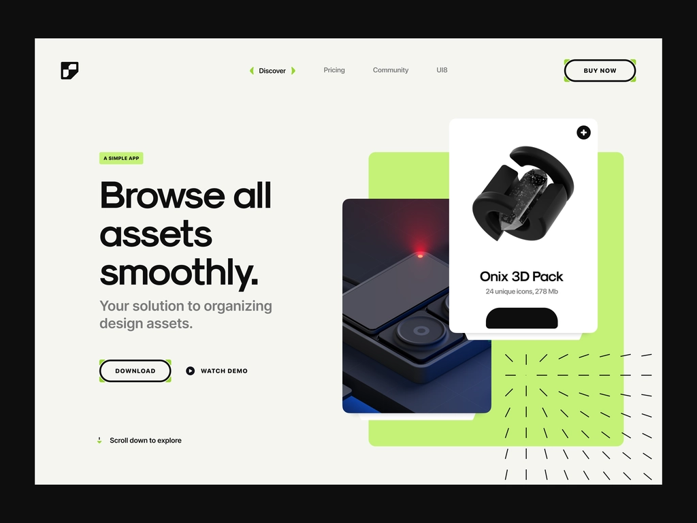
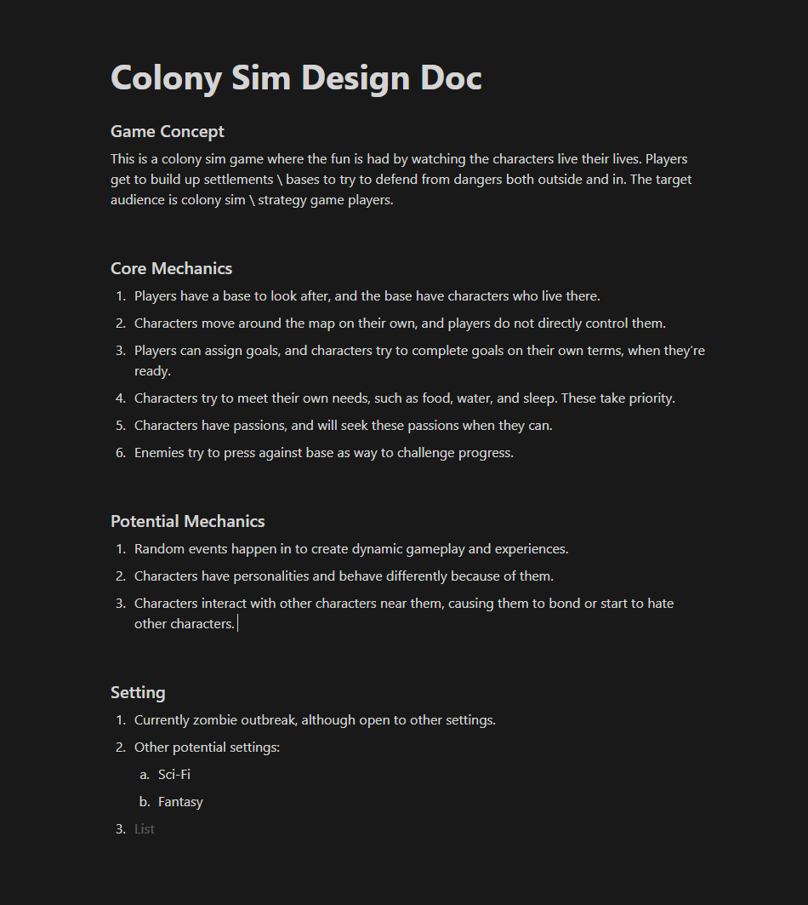

Week 1: Setup
Week 1 had several goals to accomplish. Strangely enough, the start to this journey was building a website; the website you're currently viewing. I started with my favorite React meta framework, Next.js, and started looking for inspiration on how the website should look. I had made a website with a glassmorphic design and was interested in exploring that some more. My first idea actually still exists on the currect site, but in a much less significant role. If you remember from the homepage, the week list consists of glassy cards in two columns. The initial idea was to make these cards the focus of the website and the main source of information. After the cards, I began searching for an interesting background that could show off the glassy cards that were meant to be the focus. The one I landed on was from --https://wweb.dev/resources/animated-css-background-generator/-- . Its a mostly one for one implementation, and I can't see much to improve about it. I changed the z-index and went on my way to trying to fix the clearly lacking glassmorphic cards. When I'm searching for inspiration I tend to end up at: https://dribbble.com I went under the landing page tag and started scrolling until I saw this image:
This is a post by Tran Mau Tri Tam (That's the account's name) and you can click on the image to view the dribble page on it. As you probably already noticed, this is not what mine ended up looking like, but it did give me an idea. I could try to have a simple intro title with a few cards to the right that detail what the website is about and I'd be golden. That's also not how it turned out... BUT CLOSE! I started with the cards to the side, checked how it looked on mobile (which I was anticipating being an issue with this layout), and made a custom mobile layout to put the cards under. I liked that layout, tried it on the desktop version and that's basically where we're at now! Some fun things to note:
- On mobile the tip of the first card pokes out from the bottom to let you know to scroll. (Maybe a bit to much, so I may change that later to a smaller amount.)
- If you scroll fast enough to see the week cards early, you can see them animating from off the screen to in place. It is much easier to see on desktop than mobile, but possible on mobile too.
After making the Website I moved onto making the Design Doc. Here's where the doc is at right now:
It's very barebones, with just a few core ideas notes and not to much else set in stone. What's particularly vague is the setting, as I'm not sure what I want that to be just yet and I have several ideas for how to make it work in different settings. The game is going to be a colony sim where the player is able to give tasks to the group, but not directly to any character. The fun of the game is to watch as the characters do things of their own volition without the player telling them to, along with how the systems interact in a dynamic manner. It's the type of game where the systems create stories. Lastly, I created a trello board that has a few early tasks on it, and will grow as I prototype and get a feel for what mechanics and systems the game really needs. Here is a link to the trello board: https://trello.com/b/8YEkuLN0/colony-sim-game With finallizing this webpage that you're reading now, I think I'm going to call it a week! I hope that you decide to follow along, and if you're curious on the game or how the journey goes I'm sure I'll cover many questions in future posts. I hope to write two more non-week posts next week; One giving a brief overview of who I am, and one giving a more detailed description of the game. For now, you can email me at jonahminihan@gmail.com or message me on my LinkedIn. One last time, thanks for reading!!